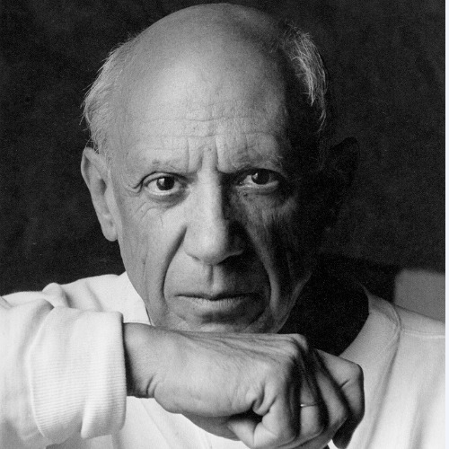

In this corner we display the best and famous artist and talk about them

In 1911, Picasso's first trip was to Paris, the art capital in Europe, and there he met for the first time his friend, the French poet and journalist Max Jacob, who helped Picasso learn French and French literature, and soon they moved to live together in a small room where Jacob slept at night while Picasso slept during the day and worked at night, and he had many times suffered from poverty, despair, and cold, to the point that many of his works burned them to keep the room warm. During the first five months in 1901, Picasso returned to live again in Madrid, where he and his anarchist friend Francesco Soler founded the magazine "Young Art", which published five issues, in which Soler wrote articles while Picasso contributed to the cartoons, most of which were the caricature in which Picasso depicted the suffering. the poor. The first issue of this magazine was published on March 31, 1901, at which time Picasso began to sign the name "Picasso" after he had, throughout his previous years, signed his works using the name "Pablo Ruiz Picasso"
Picasso died on April 8, 1973 in Mougins, France, while he was dining with his wife Jacqueline and some of their friends. His last words were "Drink for me, drink for my health, you know I can't drink more than that." Picasso was buried in a chateau near Aix-en County in a plot of land that had been given to him in 1958 and then moved to live with Jacqueline from 1959 to 1962. Jacqueline prevented his two sons Claude and Paloma from attending their father's funeral, and after that Jacqueline lived alone and shattered until she was released Ali shot herself in 1985 and died at the age of 59.